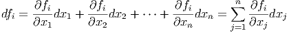>>>>>> 8ffe51d4bbc8f1e500cc9c435f05cb1c6f0ffef3
=======
src="main2667x.png" alt="x (k) " class="math" >, temos:
Desta forma, o método iterativo de Newton-Raphson para encontrar as raízes
de  é dado por:
é dado por:
Observação 5.1.1. Usamos subíndices para indicar o elemento de um vetor
e super-índices para indicar o passo da iteração. Assim  se refere à
iteração
se refere à
iteração  e 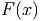 se refere à componente no vetor .
e 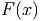 se refere à componente no vetor .
Observação 5.1.2. A notação enfatiza que a jacobiana deve
ser calculada a cada passo.
Observação 5.1.3. Podemos definir o passo como
Assim,

, ou seja, resolve o problema linear:
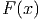 Em geral, é menos custoso resolver o sistema acima do que calcular o inverso
da jacobiana e multiplicar pelo vetor 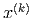.
Exemplo 5.1.1. Retornamos ao nosso exemplo inicial, isto é, resolver
numericamente os seguinte sistema não-linear:
Para tal, definimos a função :
|
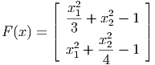>>>>>> 62bea6a0d0a1d3eca740d93a452697554da972de
=======
src="main2680x.png" alt=" ⌊ x2 ⌋
| -1-+ x22 − 1 |
F (x) = |⌈ 3 2 |⌉
x21 + x2-− 1
>>>>>>> 8ffe51d4bbc8f1e500cc9c435f05cb1c6f0ffef3
=======
src="main2685x.png" alt=" ⌊ x2 ⌋
| -1-+ x22 - 1 |
F (x) = |⌈ 3 2 |⌉
x21 + x2-- 1
>>>>>>> 2f43bff4df7198ad5fd8ebe602c2f00c0d1ecf01
4
" class="math-display" > |
cuja jacobiana é:
Faremos a implementação numérica no Scilab. Para tal definimos as funções
que implementarão 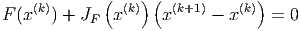 e a
function y=F(x)
y(1)=x(1)^2/3+x(2)^2-1
y(2)=x(1)^2+x(2)^2/4-1
endfunction
function y=JF(x)
y(1,1)=2*x(1)/3
y(1,2)=2*x(2)
y(2,1)=2*x(1)
y(2,2)=x(2)/2
endfunction
Alternativamente, estas funções poderiam ser escritas como
function y=F(x)
y=[x(1)^2/3+x(2)^2-1; x(1)^2+x(2)^2/4-1]
endfunction
function y=JF(x)
y=[2*x(1)/3 2*x(2); 2*x(1) x(2)/2]
endfunction
Desta forma, se é uma aproximação para a raiz, pode-se calcular a próxima
aproximação através dos comandos:
delta=-JF(x)\F(x)
x=x+delta
Ou simplesmente
x=x-JF(x)\F(x)
Observe que as soluções exatas desse sistema são  .
.
Exemplo 5.1.2. Encontre uma aproximação para a solução do sistema
que fica próxima ao ponto 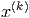 e 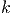.
Resp: 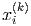.
Solução. Vamos, aqui, dar as principais ideias para se obter a solução.
Começamos definindo a função  por:
por:
cuja jacobiana é:
No Scilab, podemos implementá-las com o seguinte código:
function y=F(x)
y(1) = x(1)^2-cos(x(1)*x(2))-1
y(2) = sin(x(2))-2*cos(x(1))
endfunction
function y=JF(x)
y(1,1) = 2*x(1)+x(2)*sin(x(1)*x(2))
y(1,2) = x(1)*sin(x(1)*x(2))
y(2,1) = 2*sin(x(1))
y(2,2) = cos(x(2))
endfunction
E agora, basta iterar:
x=[1.5; .5]
x=x-JF(x)\F(x) (5 vezes)
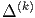
5.1.1 Código Scilab: Newton para Sistemas
function [x] = newton(F,JF,x0,TOL,N)
x = x0
k = 1
//iteracoes
while (k <= N)
//iteracao de Newton
delta = -inv(JF(x))*F(x)
x = x + delta
//criterio de parada
if (norm(delta,’inf’)<TOL) then
return x
end
k = k+1
end
error(’Num. de iter. max. atingido!’)
endfunction
 . Seja
. Seja  uma
>>>>>>> 8ffe51d4bbc8f1e500cc9c435f05cb1c6f0ffef3
=======
src="main2653x.png" alt="x* " class="math" > tal que 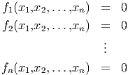. Seja 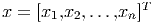 uma
>>>>>>> 2f43bff4df7198ad5fd8ebe602c2f00c0d1ecf01
aproximação para 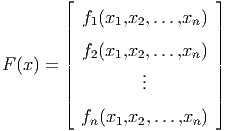, queremos construir uma nova aproximação 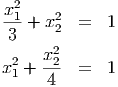
>>>>>>> 62bea6a0d0a1d3eca740d93a452697554da972de
através da linearização de
uma
>>>>>>> 8ffe51d4bbc8f1e500cc9c435f05cb1c6f0ffef3
=======
src="main2653x.png" alt="x* " class="math" > tal que 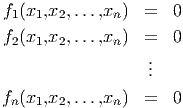. Seja 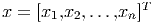 uma
>>>>>>> 2f43bff4df7198ad5fd8ebe602c2f00c0d1ecf01
aproximação para 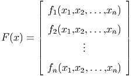, queremos construir uma nova aproximação 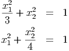
>>>>>>> 62bea6a0d0a1d3eca740d93a452697554da972de
através da linearização de